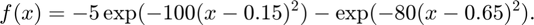
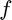
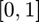
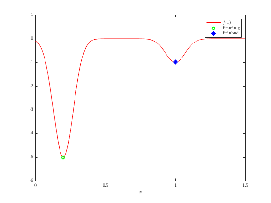
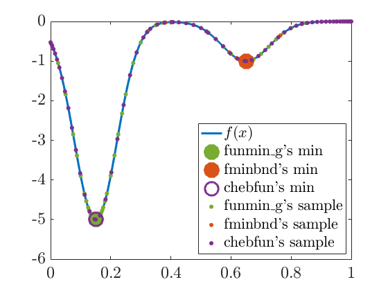

Compare funmin_g with fminbnd and chebfun
Author: Xin Tong, May 2020
Contents
Function definition and minimization
Define a function with two minima as follows:

We use funmin_g, MATLAB's fminbnd, and Chebfun's min to find the minimum of  over the interval .
Set up
close all; clearvars; format compact; format short; gail.InitializeDisplay set(0,'defaultLineMarkerSize',15)
Plot function
xplot = 0:0.001:1; fplot = fmin_ex1(xplot); h(1) = plot(xplot,fplot,'-'); set(h(1),'color',MATLABBlue) h_legend = legend([h(1)],{'$f(x)$'},'Location','Southeast'); set(h_legend,'interpreter','latex'); hold on
Plot minimum values and sample points
xAll = []; fAll = []; save fmin_ex1X xAll fAll [ffmg,outfmg] = funmin_g(@fmin_ex1,0,1); h(2) = plot(mean(outfmg.intervals),ffmg,'.'); set(h(2),'color',MATLABGreen,'MarkerSize',80) load fmin_ex1X xAll fAll h(3) = plot(xAll,fAll,'.'); set(h(3),'color',MATLABGreen) % fminbnd xAll = []; fAll = []; save fmin_ex1X xAll fAll options = optimset('TolX',outfmg.abstol,'TolFun',outfmg.abstol); [xfmb,ffmb] = fminbnd(@fmin_ex1,0,1,options); h(4) = plot(xfmb,ffmb,'.'); set(h(4),'color',MATLABOrange,'MarkerSize',80) load fmin_ex1X xAll fAll h(5) = plot(xAll,fAll,'.'); set(h(5),'color',MATLABOrange) % chebfun xAll = []; fAll = []; save fmin_ex1X xAll fAll chebf = chebfun(@fmin_ex1,[0,1],'chebfuneps', outfmg.abstol, 'splitting','on'); chebfval = min(chebf); chebxvals = roots(diff(chebf)); [v,i] = min(abs(fmin_ex1(chebxvals)-chebfval)); chebxval = chebxvals(i); chebn = length(chebf); h(6) = plot(chebxval,chebfval,'o'); set(h(6),'color',MATLABPurple,'MarkerSize',20) load fmin_ex1X xAll fAll h(7) = plot(xAll,fAll,'.'); set(h(7),'color',MATLABPurple) h_legend = legend([h(1) h(2) h(4) h(6) h(3) h(5) h(7)],{'$f(x)$','funmin\_g''s min',... 'fminbnd''s min','chebfun''s min','funmin\_g''s sample','fminbnd''s sample','chebfun''s sample'},... 'Location','Southeast'); set(h_legend,'interpreter','latex'); delete('fmin_ex1X.mat'); function y = fmin_ex1(x) if exist('fmin_ex1X.mat','file') load fmin_ex1X xAll fAll else xAll = []; fAll = []; end xAll = [xAll; x(:)]; y = -5*exp(-100*(x-0.15).^2) - exp(-80*(x-0.65).^2); fAll = [fAll; y(:)]; save fmin_ex1X xAll fAll end
References
[1] Sou-Cheng T. Choi, Yuhan Ding, Fred J. Hickernell, Xin Tong, "Local Adaption for Approximation and Minimization of Univariate Functions," Journal of Complexity 40, pp. 17-33, 2017.
[2] Sou-Cheng T. Choi, Yuhan Ding, Fred J. Hickernell, Lan Jiang, Lluis Antoni Jimenez Rugama, Da Li, Jagadeeswaran Rathinavel, Xin Tong, Kan Zhang, Yizhi Zhang, and Xuan Zhou, GAIL: Guaranteed Automatic Integration Library (Version 2.3.1) [MATLAB Software], 2020. Available from http://gailgithub.github.io/GAIL_Dev/
[3] T. A. Driscoll, N. Hale, and L. N. Trefethen, editors, "Chebfun Guide", Pafnuty Publications, Oxford, 2014.
[4] MATLAB's fminbnd, see